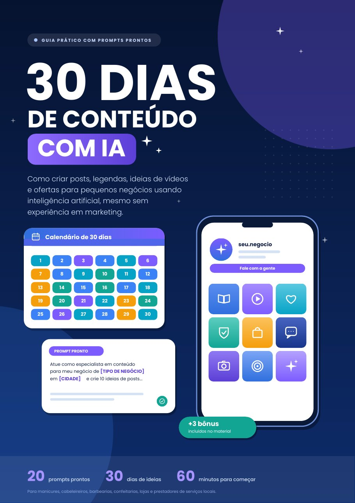
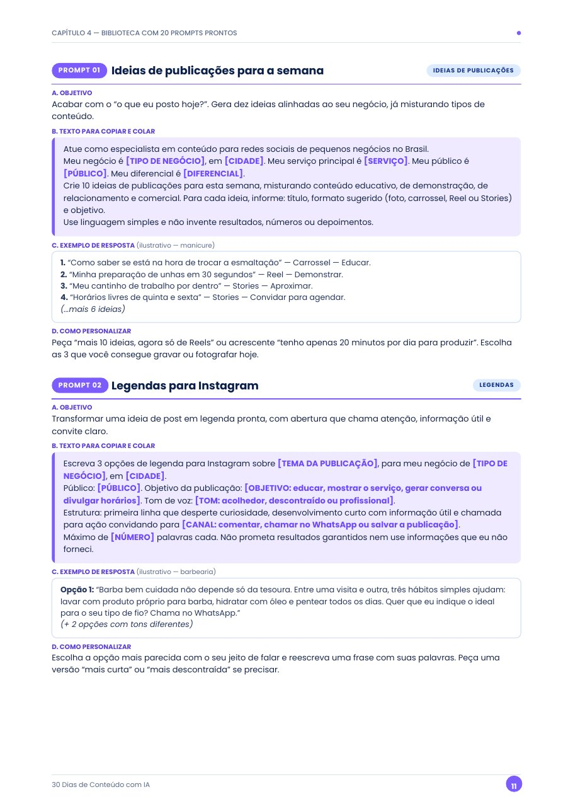
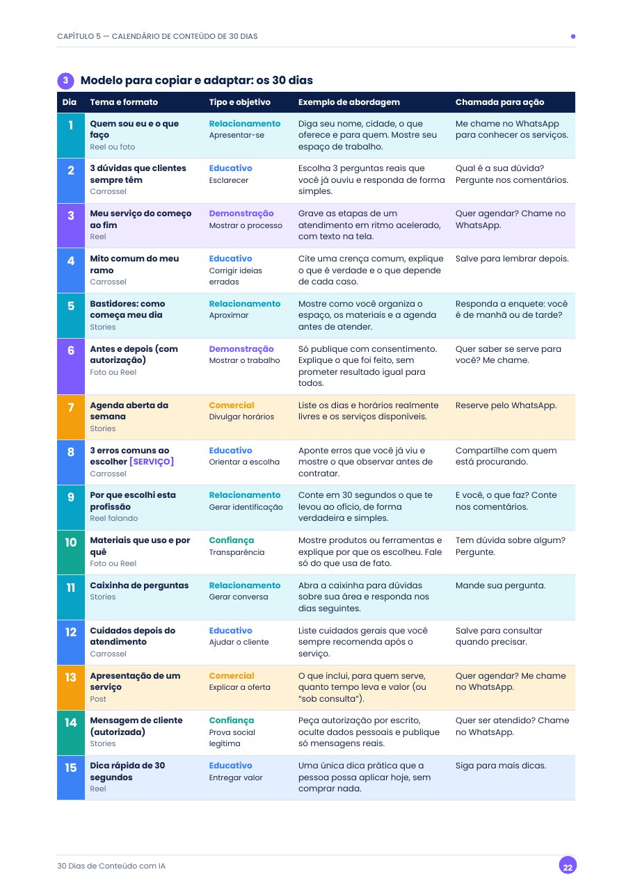
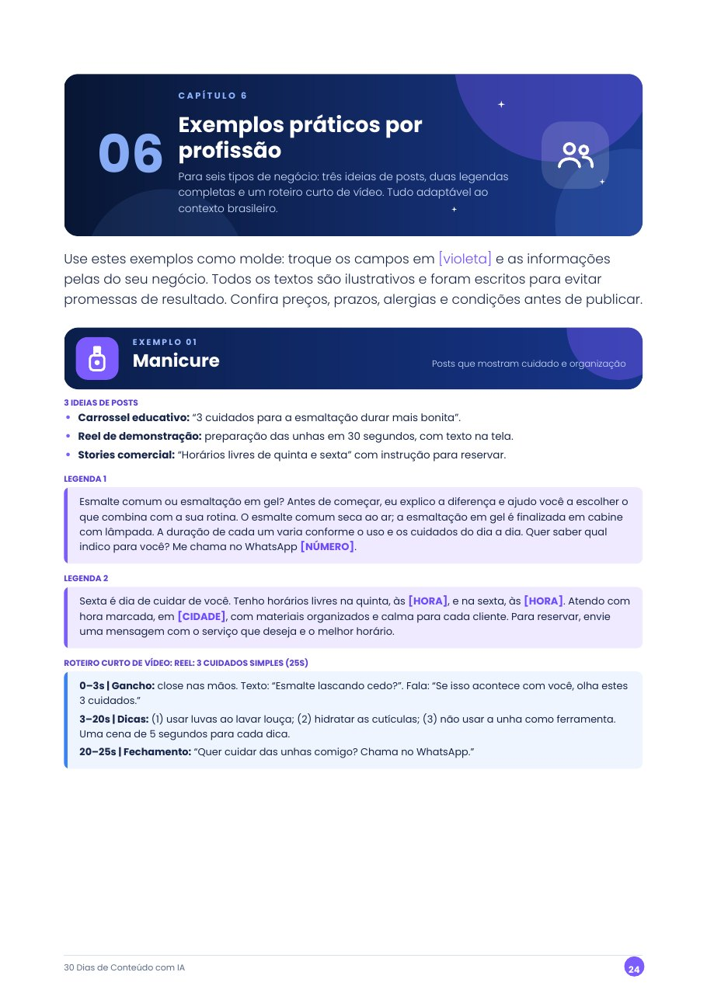
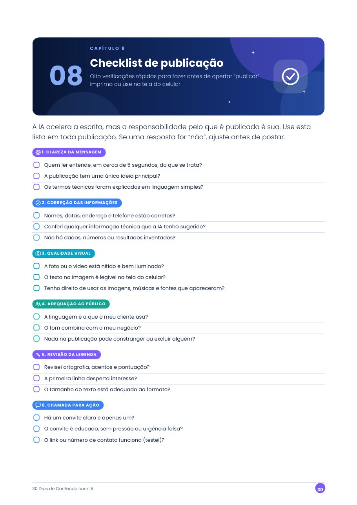

20 prompts prontos
Ideias de posts, legendas, roteiros de Reels, carrosséis, mensagens de atendimento, promoções, respostas a objeções e mais. Cada um com exemplo de resposta e dicas para personalizar.
Guia prático em PDF com prompts prontos
Como criar posts, legendas, ideias de vídeos e ofertas usando inteligência artificial, mesmo sem experiência em marketing.
Produto digital em PDF • Preço: R$ 19,90

Muita gente que atende clientes todos os dias passa pela mesma situação na hora de divulgar:
Este guia organiza o processo em passos simples e dá instruções prontas para você usar com um assistente de IA, revisando e colocando o seu jeito em cada texto.
Um e-book em PDF, com 39 páginas, feito para você aplicar no mesmo dia.
Ideias de posts, legendas, roteiros de Reels, carrosséis, mensagens de atendimento, promoções, respostas a objeções e mais. Cada um com exemplo de resposta e dicas para personalizar.
Uma ideia por dia, com tema, formato, objetivo, exemplo de abordagem e chamada para ação, equilibrando educação, relacionamento, demonstração, confiança e oferta.
Três ideias de posts, duas legendas completas e um roteiro curto de vídeo para seis tipos de negócio, em linguagem natural e adaptável.
Um passo a passo de seis etapas, com ficha do negócio para preencher uma vez, comandos para refinar respostas e orientações de revisão e privacidade.
Lista de verificação antes de publicar e um roteiro para organizar a sua primeira semana em uma hora.
Banco com 50 ideias extras, planejador semanal com campos editáveis e checklist de perfil comercial.
Imagens reais de páginas do e-book.




Bônus: banco de 50 ideias extras • modelo de planejamento semanal • checklist de perfil comercial
Cerca de 20 minutos para entender os tipos de conteúdo e o fluxo de uso da IA.
Copie, preencha os campos com os dados do seu negócio e cole no assistente de IA que você usa.
Use o calendário e o plano de 60 minutos para organizar a sua primeira semana de conteúdo.
E-book digital em PDF • 20 prompts • calendário de 30 dias • 3 bônus
R$ 19,90
Comprar agoraPagamento e entrega processados pela plataforma Kiwify, no ambiente seguro do checkout. Este site não coleta dados de pagamento.
É um e-book digital em PDF, para ler no celular, tablet ou computador. Não é um produto físico.
Não. O material foi escrito em linguagem simples, com exemplos e modelos para copiar e adaptar.
Você precisa de acesso a um assistente de IA de texto, à sua escolha. Recursos, limites e planos dessas ferramentas mudam com o tempo e não fazem parte deste produto: confira na documentação oficial da ferramenta que você usar.
Não. Ele ensina a organizar e produzir conteúdo. Os resultados dependem de vários fatores, como a qualidade do seu serviço, o seu atendimento e a sua constância.
Os exemplos cobrem seis tipos de negócio e os modelos usam campos para você preencher com os dados do seu. Se você divulga serviços ou produtos para clientes locais, é possível adaptar.
Seguem as condições informadas no checkout da Kiwify no momento da compra. Confira ali os detalhes antes de finalizar o pagamento.